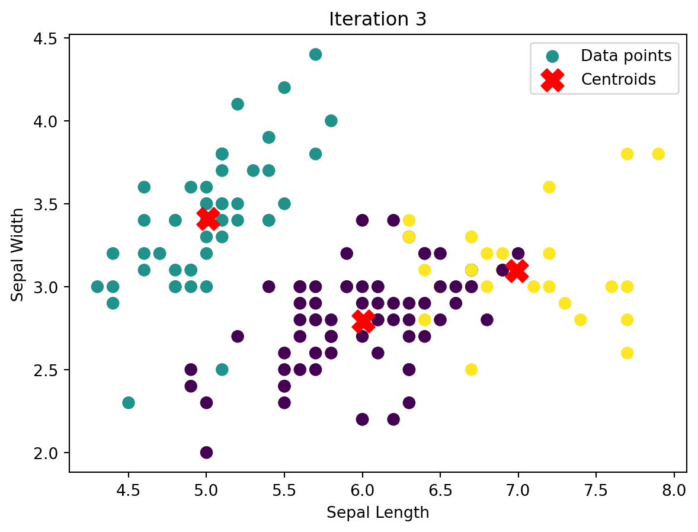

| Loading ITables v2.6.1 from the internet... (need help?) |
Segmentation Methods
Introduction
In this study, I employ clustering to identify natural groupings in the Iris dataset by utilizing the KMeans algorithm. This method reveals distinct clusters that share similar characteristics, helping us understand the inherent structure of the data. Subsequently, I will apply a Latent Class Multinomial Logit model on the Yogurt Dataset to delve deeper into the decision-making processes within these cluster groups, capturing the diverse preferences and behaviors across the dataset.
K-Means
Data Description
Iris Data
There are 150 rows in this data
There are 5 columns in this dataSpecies
setosa 50
versicolor 50
virginica 50
Name: count, dtype: int64There are 3 total species in this dataset, with each of them having 50 entries. ### KMeans Algorithm Overview
K-means is an iterative clustering algorithm that aims to partition n observations into k clusters in which each observation belongs to the cluster with the nearest mean. The algorithm works as follows:
Initialization: Select k initial centroids randomly from the data points.
Assignment step: Assign each data point to the closest centroid. The “closeness” is typically determined by the Euclidean distance between points.
Update step: Recalculate the centroids as the mean of all data points assigned to that centroid’s cluster.
Convergence Check: Repeat the assignment and update steps until the centroids do not change significantly, or a maximum number of iterations is reached.
Step 1 - Initialization
The initialization step is crucial in the K-means algorithm as it sets the starting point for the clusters. In this step, k initial centroids are selected randomly from the data points. The choice of initial centroids can significantly affect the final clusters and convergence speed of the algorithm. There are various strategies for choosing these centroids. My implementation randomly pick k unique data points from the dataset.
def initialize_centroids(X, k):
indices = np.random.choice(X.shape[0], k, replace=False)
return X[indices]Step 2 - Assignment
During the assignment step, each data point in the dataset is assigned to the nearest centroid. “Nearest” in my implementation is defined using the Euclidean distance, although other distance metrics can also be used. This step partitions the input data into k clusters based on the minimal distance criterion.
def assign_clusters(X, centroids):
labels = np.zeros(len(X), dtype=int)
# Iterate over each data point
for i, point in enumerate(X):
min_distance = float('inf') # Start with a very large number as the minimum distance
# Compare distance of 'point' to each centroid
for idx, centroid in enumerate(centroids):
# Calculate Euclidean distance from point to centroid
distance = np.sqrt(np.sum((point - centroid) ** 2))
# Update label for the point if a closer centroid is found
if distance < min_distance:
min_distance = distance
labels[i] = idx
return labelsStep 3 - Update
The update step recalculates the position of each centroid based on the mean of the data points assigned to each cluster. The function update_centroids(X, labels, k) computes the new centroids by taking the mean of all points labeled with each respective cluster index. This approach is vectorized, leveraging NumPy’s array operations to efficiently compute the mean for each cluster. This step is crucial for moving the centroids to the center of their respective clusters, which is key to refining the cluster assignments in subsequent iterations.
def update_centroids(X, labels, k):
new_centroids = np.array([X[labels == i].mean(axis=0) for i in range(k)])
return new_centroidsStep 4 - Convergence Check
The convergence check is where you actually implement the K-means algorithm, where the algorithm iteratively performs the assignment and update steps until the centroids no longer change significantly, indicating convergence, or until a specified maximum number of iterations is reached.
def k_means(X, k, max_iters=10, plot = True):
centroids = initialize_centroids(X, k)
for _ in range(max_iters):
labels = assign_clusters(X, centroids)
new_centroids = update_centroids(X, labels, k)
if plot:
plot_clusters(X, new_centroids, labels, title = f"Iteration {int(_+1)}")
if np.allclose(centroids, new_centroids):
break
centroids = new_centroids
return centroids, labelsK-Means Implementation
Since the Iris dataset have 3 distinct species, I will cluster the data into 3 groups. Below is the visualization of the algorithm as it computes the clusters
k = 3
centroids, labels = k_means(X, k)
As seen above, the K means cluster converged after iteration 6, meaning that the positions of the centroids did not change significantly from the previous iteration. This convergence indicates that the algorithm has found a stable clustering of the data where further iterations would not lead to any further significant changes in the positions of the centroids.
Comparing with Sklearn K-Means
Below shows the implementation of Sklearn’s K-Means:
from sklearn.cluster import KMeans
sklearn_kmeans = KMeans(n_clusters=3)
sklearn_kmeans.fit(X)
sklearn_labels = sklearn_kmeans.labels_
sklearn_centroids = sklearn_kmeans.cluster_centers_And the final cluster is shown below:
And this is the final cluster from my own K-means algorithm:
As seen above, the clustering are very similar.
Note: This is with np.random.seed set to 42, with a different seed, it is likely to get different clustering results.
Within - Cluster Sum of Squares and Silhouette Scores
For this portion, I will be computing both with my own custom function.
The WCSS and Silhouette Scores as the number of clusters increase is shown below:
Analysis
WCSS (Within-Cluster Sum of Squares): The WCSS decreases as the number of clusters increases. This plot also shows a potential elbow around k=3, indicating that adding more clusters beyond this point results in diminishing returns in terms of WCSS reduction.
Silhouette Score: This metric peaks noticeably at k=2, suggesting that the clusters are most distinct and well-separated at this point. The silhouette scores for higher values of k are lower, indicating less optimal clustering in terms of inter-cluster separation and intra-cluster cohesion.
Conclusion
Both the Within-Cluster Sum of Squares (WCSS) and the Silhouette Score provide valuable insights into the optimal number of clusters for the Iris dataset. The WCSS shows a clear elbow at k = 3, suggesting that increasing the number of clusters beyond three leads to diminishing returns in terms of variance reduction. On the other hand, the Silhouette Score peaks at k = 2, indicating excellent separation and cohesion at two clusters.
However, given the context of the Iris dataset, which comprises three distinct species, opting for three clusters is particularly meaningful. This choice not only aligns with the natural divisions in the data but also matches the biological expectation, thereby providing a scientifically coherent clustering solution.
Latent-Class MNL
In this portion, I explore a Latent-Class MNL model on the yogurt dataset that I used previously here.
Likelihood for the Latent Class Multi-nomial Logit (LC-MNL) Model
In the Latent Class Multinomial Logit (LC-MNL) model, we extend the standard MNL model by incorporating latent heterogeneity among consumers. Here, instead of assuming all individuals derive utility from product characteristics in the same way, we assume there are \(K\) distinct classes of consumers, each with its own unique set of preferences.
Model Setup
Let’s denote: - \(i = 1, \ldots, n\): index for consumers. - \(j = 1, \ldots, J\): index for products. - \(k = 1, \ldots, K\): index for latent classes.
Each consumer \(i\) belongs to one latent class \(k\), but this class membership is unobserved. We assume: - Each class \(k\) has its own parameter vector \(\beta_k\), reflecting distinct preferences. - \(z_{ik}\) is an indicator variable that equals 1 if consumer \(i\) is in class \(k\) and 0 otherwise.
Utility Function
For consumer \(i\) choosing product \(j\) while belonging to class \(k\), the utility is given by: \[ U_{ijk} = x_j' \beta_k + \epsilon_{ijk} \] where \(\epsilon_{ijk}\) is an i.i.d. extreme value error term, similar to the MNL model.
Probability of Choice
The probability that consumer \(i\) in class \(k\) chooses product \(j\) is: \[ \mathbb{P}_{ik}(j) = \frac{e^{x_j' \beta_k}}{\sum_{l=1}^J e^{x_l' \beta_k}} \]
Latent Class Probabilities
We also model the probability that any consumer belongs to class \(k\), potentially as a function of some observed characteristics \(w_i\) of the consumer: \[ \pi_k(w_i; \gamma) = \frac{e^{w_i' \gamma_k}}{\sum_{m=1}^K e^{w_i' \gamma_m}} \] where \(\gamma\) are parameters to be estimated that influence class membership.
Individual Likelihood Function
The individual likelihood function for consumer \(i\), taking into account the uncertainty about class membership, is: \[ L_i(\beta_1, \ldots, \beta_K; \gamma) = \sum_{k=1}^K \pi_k(w_i; \gamma) \prod_{j=1}^J \mathbb{P}_{ik}(j)^{\delta_{ij}} \] Here, the likelihood is a weighted sum of the probabilities of choosing each product across all classes, weighted by the probability of belonging to each class.
Joint Likelihood Across All Consumers
The joint likelihood across all consumers is the product of all individual likelihoods: \[ L_n(\beta_1, \ldots, \beta_K; \gamma) = \prod_{i=1}^n L_i(\beta_1, \ldots, \beta_K; \gamma) \]
Log-Likelihood Function
The joint log-likelihood function, which is more practical for estimation due to numerical stability, is: \[ \ell_n(\beta_1, \ldots, \beta_K; \gamma) = \sum_{i=1}^n \log \left( \sum_{k=1}^K \pi_k(w_i; \gamma) \prod_{j=1}^J \mathbb{P}_{ik}(j)^{\delta_{ij}} \right) \]
Key Differences from MNL
- Consumer Heterogeneity: LC-MNL accounts for different consumer preferences by classifying them into latent classes with distinct utility parameters.
- Complexity in Estimation: Estimation involves both the coefficients that describe how product characteristics affect utility and the parameters that govern class membership.
- Model Flexibility: LC-MNL provides a richer understanding of market segmentation and can reveal niche markets or consumer segments that might be obscured in a standard MNL model.
The LC-MNL model thus offers a robust framework for understanding consumer choice behavior when there are unobserved segments in the market, each with unique preferences, which can be particularly valuable in targeted marketing and product positioning strategies. ### Estimation
The latent class log likelihood function I will be using is shown below:
def log_likelihood_lc(params, data, num_classes):
# Split params into class probabilities (in log scale for optimization) and class-specific beta coefficients
class_log_probs = params[:num_classes]
class_probs = np.exp(class_log_probs - np.max(class_log_probs)) # To prevent numerical overflow
class_probs /= np.sum(class_probs) # Normalize to make probabilities sum to 1
betas = params[num_classes:].reshape((num_classes, 5)) # Reshape into class-specific params
total_log_likelihood = 0
for k in range(num_classes):
beta = betas[k]
data['utility'] = (beta[0] * data['yogurt 1'] +
beta[1] * data['yogurt 2'] +
beta[2] * data['yogurt 3'] +
beta[3] * data['featured'] +
beta[4] * data['price'])
data['exp_utility'] = np.exp(data['utility'])
data['sum_exp_utility'] = data.groupby('id')['exp_utility'].transform('sum')
data['probability'] = data['exp_utility'] / data['sum_exp_utility']
# Compute the log-likelihood for this class
class_log_likelihood = data['chosen'] * np.log(data['probability'] + 1e-10) # Adding small number to avoid log(0)
# Weight by class membership probability
total_log_likelihood += class_probs[k] * class_log_likelihood.sum()
return -total_log_likelihoodWith the function defined, I then used scipy.optimize from Python to find the beta values for the 5 parameters and for both class (only 2 latent classes). First, I initilized all the guesses as zero, then I used the minimize() fucntion from scipy.optimize to find the beta values. The values are shown below.
Class Probabilities: [0.5 0.5]
Parameters for Class 1: Beta_1 = 1.3877386121518487 , Beta_2 = 0.6435095603213673 , Beta_3 = -3.086078162965555 , Beta_f = 0.4874455398436589 , Beta_p = -37.05704289446939
Parameters for Class 2: Beta_1 = 1.3877386121518487 , Beta_2 = 0.6435095603213673 , Beta_3 = -3.086078162965555 , Beta_f = 0.4874455398436589 , Beta_p = -37.05704289446939It appears that both class have the same beta values, potentially indicating indistinguishable class characterstics.
Comparing to Original MNL
The original parameters from the previous post was:
Estimated parameters: beta_1: 1.3877520023064622
beta_2: 0.6435049292323878
beta_3: -3.0861128992213978
beta_f: 0.48741409137900876
beta_p: -37.0578717065307
Comparing to the latent class model, it appears that the parameters are very similar, with very slight differences only.
Number of Class
To determine the optimal number of latent classes to use, I fit the Latent Class Multinomial Logit (LC-MNL) model for a range of class numbers (2, 3, …, K) and evaluate each model using the Bayesian Information Criterion (BIC).
The BIC is a criterion for model selection among a finite set of models; the model with the lowest BIC is preferred. It is calculated as:
\[ \text{BIC} = -2 \cdot \ell + p \cdot \log(n) \]
where: - ( ) is the log-likelihood of the model. - ( p ) is the number of estimated parameters. - ( n ) is the number of observations.
The BIC penalizes models with more parameters to prevent overfitting, balancing model complexity with goodness of fit. By computing the BIC for models with different numbers of latent classes, we can identify the model that best explains the data without unnecessary complexity.
In this analysis, I fit the LC-MNL model for 2 to 7 classes and computed the BIC for each model. The results is shown below:
def calculate_bic(log_likelihood, num_params, num_obs):
return -2 * log_likelihood + num_params * np.log(num_obs)
def fit_lc_mnl_model(data, max_classes=7):
num_obs = data['id'].nunique()
num_features = 5 # beta1, beta2, beta3, beta_f, beta_p
params_values = {}
bic_values = []
for num_classes in range(2, max_classes + 1):
initial_params = np.zeros(num_classes + num_classes * num_features)
result = minimize(log_likelihood_lc, initial_params, args=(data, num_classes), method='L-BFGS-B')
if result.success:
log_likelihood = -result.fun
num_params = num_classes + num_classes * num_features
bic = calculate_bic(log_likelihood, num_params, num_obs)
bic_values.append((num_classes, bic))
params_values[num_classes] = result.x
else:
print(f"Classes: {num_classes} failed to converge.")
return bic_values, params_values
bic_values, params_values = fit_lc_mnl_model(yogurt_data)
optimal_num_classes = min(bic_values, key=lambda x: x[1])
bic_values, optimal_num_classes([(2, 5410.661151671423),
(3, 5457.435031702688),
(4, 5504.208910689819),
(5, 5550.982794165628),
(6, 5597.756685952132),
(7, 5644.530555504753)],
(2, 5410.661151671423))The results indicate that the model with 2 latent classes has the lowest BIC value, suggesting it is the optimal number of classes for our dataset.
Below are the optimal parameters:
Optimal number of classes: 2
Class 1 Probabilities: 0.5
Parameters for Class 1:
Beta_1 = 1.3877386121518487
Beta_2 = 0.6435095603213673
Beta_3 = -3.086078162965555
Beta_f = 0.4874455398436589
Beta_p = -37.05704289446939
Class 2 Probabilities: 0.5
Parameters for Class 2:
Beta_1 = 1.3877386121518487
Beta_2 = 0.6435095603213673
Beta_3 = -3.086078162965555
Beta_f = 0.4874455398436589
Beta_p = -37.05704289446939
Discussion
From the beta intercept values, it appears that for both class:
- Yogust 1 is the most preferred as (\(\beta_1\)) has the largest positive value
- Yogurt 2 is also second most preferred as (\(\beta_2\)) is also positive. However, it is less preferred compared to Yogurt 1
- Yogurt 3 is the least preferred, as suggested by the negative (\(\beta_3\))
- Yogurt 4 is third preferred. As it is the base comparison and there are 2 yogurts with positive coefficients and 1 yogurt with negative coefficient, making yogurt 4 the third preferred
- (\(\beta_f\)) having a positive value of 0.487 indicates that featuring a yogurt increases its utility and thus its chance of being selected
- (\(\beta_p\)) having a large negative value of 37.057 indicates higher prices reduces the chance of a yogurt being selected